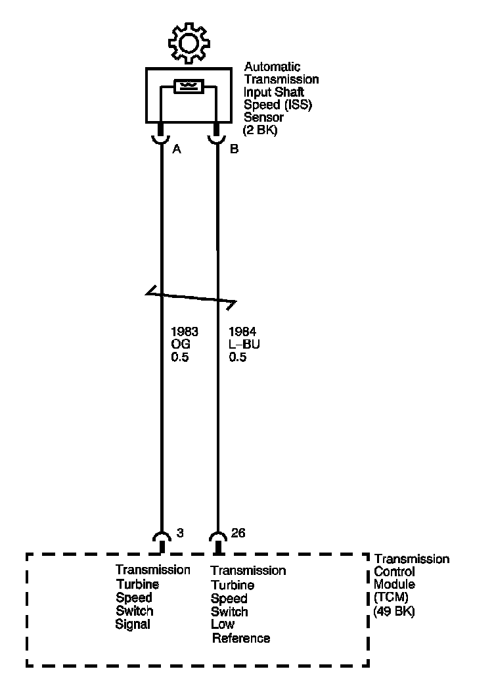

4L80-E / 4L85-E Automatic Transmission
DTC P0716

Circuit Description
The automatic transmission input shaft speed (AT ISS) sensor provides transmission input speed to the transmission control module (TCM). The AT ISS sensor is a permanent magnet (PM) generator. The sensor mounts into the transmission case and maintains a slight air gap between the sensor and the forward clutch housing. The PM generator produces an AC voltage as the forward clutch housing rotor teeth pass through the magnetic field of the sensor. The AC voltage level increases as the turbine shaft speed increases. The TCM converts the AC voltage into a digital signal. The TCM determines actual turbine speed using the digital signal. The TCM uses the input speed to calculate torque converter slip speed, and gear ratios.
When the TCM detects an unreasonably large change in the input speed, in a very short period of time, then DTC P0716 sets. DTC P0716 is a type B DTC.
DTC Descriptor
This diagnostic procedure supports the following DTC:
DTC P0716 Input Speed Sensor Performance
Conditions for Running the DTC
^ No ISS DTC P0717.
^ No OSS DTCs P0722 or P0723.
^ No 2-3 shift solenoid performance DTC P0757.
^ No 1-2 shift solenoid electrical DTCs P0973 or P0974.
^ The system voltage is 8-18 volts.
^ The engine is running for greater than 5 seconds.
^ The engine torque is greater than 50 N.m (37 lb ft).
^ The input speed is 1,050 RPM or greater and does not change greater than 1,000 RPM for 2 seconds or greater.
^ The calc. throttle position is 8 percent or greater.
^ The vehicle speed is 16 km/h (10 mph) or greater.
Conditions for Setting the DTC
The input speed changes by 1,000 RPM or greater for 3.25 seconds or greater.
Action Taken When the DTC Sets
^ The TCM requests the engine control module (ECM) to illuminate the malfunction indicator lamp (MIL) during the second consecutive trip in which the Conditions for Setting the DTC are met.
^ The TCM commands maximum line pressure.
^ The TCM freezes transmission adaptive functions.
^ The ECM records the operating conditions when the Conditions for Setting the DTC are met. The ECM stores this information as Freeze Frame and Failure Records.
^ The TCM records the operating conditions when the Conditions for Setting the DTC are met. The TCM stores information as Failure Records.
^ The TCM stores the DTC P0716 in TCM history during the second consecutive trip in which the Conditions for Setting the DTC are met.
^ The TCM calculates input speed from gear ratio and output speed.
Conditions for Clearing the MIL/DTC
^ The ECM turns OFF the MIL after the third consecutive drive trip in which the TCM does not send a MIL illumination request.
^ A scan tool can clear the MIL/DTC.
^ The TCM clears the DTC from TCM history if the vehicle completes 40 warm-up cycles without an emission related diagnostic fault occurring.
Diagnostic Aids
DTC P0716 defaults to an elevated line pressure condition which may result in partial torque converter clutch (TCC) apply. This may produce an idle surge that could stall the engine.
Test Description
The number below refers to the step number on the diagnostic table.
2. This step tests for proper operation of the AT ISS sensor.